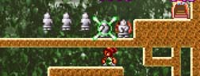
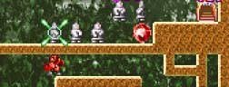

ムズイよ〜♪
| ２-２ 黒 ステージ1は小手調べと言うことで、 |
攻略の流れ
| さて、この面の難しさは全て、 このラストの白埴輪5連発の部分にあります。 下をくぐっていくことは出来ません。 |
|
| が、下から斬り上げることが攻略のコツです。 一番右の埴輪を、 "1回だけ"斬りつけて下さい。 |
|
|  | 右から2番目の埴輪は、 "2回"斬りつけます。 この時の注意点として、連続で斬りつけない事。 1回斬って、動き出してからもう一度 斬りつけてください。 |
| 右から3番目の埴輪は、 同じように"3回"斬りつけてください。 |
|
| 右から4番目は、"4回"… 斬りつけてもよいのですが、 4回斬ると、動きが元に戻ってしまうので、 実は1回も斬りつける必要はありません。 |
|
|  | よって、右から5番目は、 "5回"斬りつけてもよいのですが、 実は"1回"斬りつけるだけでよいのです。 |
| すると、埴輪5体が、 ちょうどウェーブのように動くので、 波乗りをするように、上を通り抜けてください。 とはいっても、タイミングを取るのが 一番ムズイんですけど。 右入れっぱなしだと死んでしまうので、 途中で一瞬、止まるのがコツです。 |
|
| ヤッター、ヤッター、ヤッターマン！ |
クリアできたら、次は
黒デカアイテムを取ってからのクリアにチャレンジしてみてください。